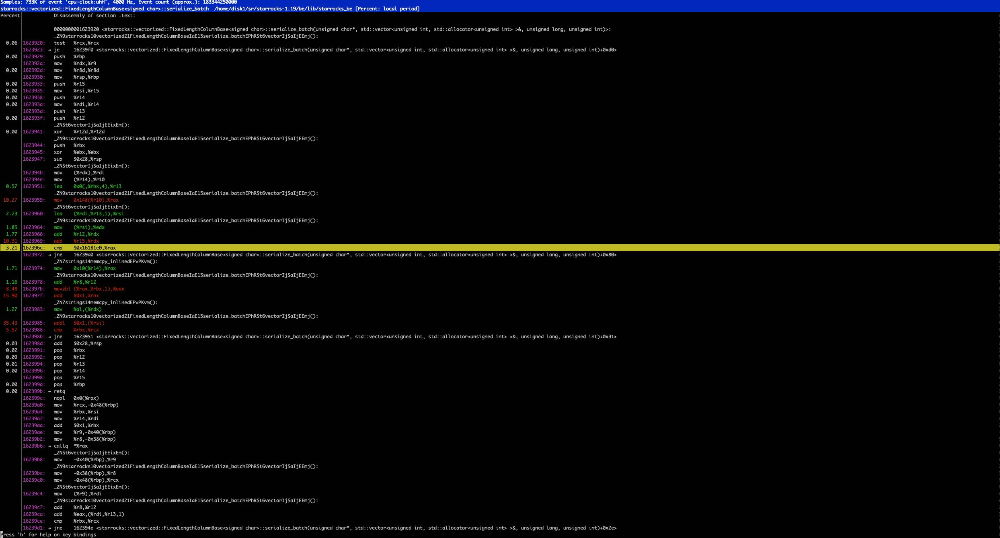
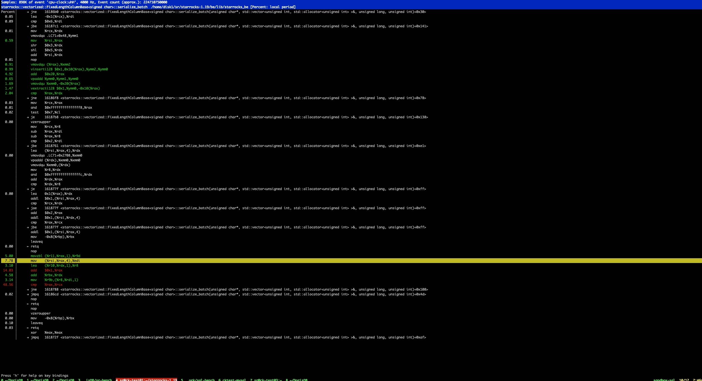

一段奇怪的汇编代码
Table of Contents
1. 问题出现
下面代码在profile的时候发现，每次循环的时候rax在和奇怪的地址进行比较 0x16181e0
template <typename T> inline uint32_t FixedLengthColumnBase<T>::serialize(size_t idx, uint8_t* pos) { strings::memcpy_inlined(pos, &_data[idx], sizeof(T)); return sizeof(T); } template <typename T> void FixedLengthColumnBase<T>::serialize_batch(uint8_t* __restrict__ dst, Buffer<uint32_t>& slice_sizes, size_t chunk_size, uint32_t max_one_row_size) { for (size_t i = 0; i < chunk_size; ++i) { slice_sizes[i] += serialize(i, dst + i * max_one_row_size + slice_sizes[i]); } }
其中rax这里在和某个奇怪的地址进行比较。一个 `奇怪` 的怀疑是判断地址空间是否越界，如果越界的话会去resize空间大小。编译器没有办法确定slice_sizes大小是可以保证不会产生越界情况。

2. 避免使用vector
改成下面这样的写法，似乎也不太行，那个奇怪的地址比较还在。不过代码好像清爽不少。
template <typename T> inline uint32_t FixedLengthColumnBase<T>::serialize(size_t idx, uint8_t* pos) { strings::memcpy_inlined(pos, &_data[idx], sizeof(T)); return sizeof(T); } template <typename T> void FixedLengthColumnBase<T>::serialize_batch(uint8_t* __restrict__ dst, Buffer<uint32_t>& slice_sizes, size_t chunk_size, uint32_t max_one_row_size) { uint32_t* sizes = slice_sizes.data(); for (size_t i = 0; i < chunk_size; ++i) { sizes[i] += serialize(i, dst + i * max_one_row_size + sizes[i]); } }
3. 反汇编 0x16181e0 地址
使用命令 `objdump -S –start-address=0x16181e0 –stop-address=0x16281e0 output/be/lib/starrocks_be` 可以看到这个奇怪地址对应的汇编/代码，就是这个memcpy_inlined，并且是针对长度为1的特定代码。
我觉得 `call *rax` 那个部分代码，是编译器认为如果长度不是1的话，那么就会跳转到原始的memcpy实现上。但是纯粹从C++代码来看，这个size是可以确定为 `sizeof(T)` 并且完全不会变的，不太清楚为什么编译器没有做这个优化，或者是完成这个推理。
output/be/lib/starrocks_be: file format elf64-x86-64 Disassembly of section .text: 00000000016181e0 <_ZN9starrocks10vectorized21FixedLengthColumnBaseIaE9serializeEmPh>: // parameter of memcpy is a constant. switch (size) { case 0: break; case 1: memcpy(dst, src, 1); 16181e0: 48 8b 47 10 mov 0x10(%rdi),%rax 16181e4: 0f b6 04 30 movzbl (%rax,%rsi,1),%eax 16181e8: 88 02 mov %al,(%rdx) template <typename T> inline uint32_t FixedLengthColumnBase<T>::serialize(size_t idx, uint8_t* pos) { strings::memcpy_inlined(pos, &_data[idx], sizeof(T)); return sizeof(T); } 16181ea: b8 01 00 00 00 mov $0x1,%eax 16181ef: c3 retq 00000000016181f0 <_ZN9starrocks10vectorized21FixedLengthColumnBaseIaE17serialize_defaultEPh>: 16181f0: c6 06 00 movb $0x0,(%rsi) template <typename T> uint32_t FixedLengthColumnBase<T>::serialize_default(uint8_t* pos) { ValueType value{}; strings::memcpy_inlined(pos, &value, sizeof(T)); return sizeof(T); } 16181f3: b8 01 00 00 00 mov $0x1,%eax 16181f8: c3 retq 16181f9: 0f 1f 80 00 00 00 00 nopl 0x0(%rax)
4. 手工使用memcpy
template <typename T> void FixedLengthColumnBase<T>::serialize_batch(uint8_t* __restrict__ dst, Buffer<uint32_t>& slice_sizes, size_t chunk_size, uint32_t max_one_row_size) { uint32_t* sizes = slice_sizes.data(); T* __restrict__ src = _data.data(); for (size_t i = 0; i < chunk_size; ++i) { memcpy(dst + i * max_one_row_size + sizes[i], src + i, sizeof(T)); } for (size_t i = 0; i < chunk_size; i++) { sizes[i] += sizeof(T); } }
可以看到最后生成的代码就没有这个奇怪的比较了。
